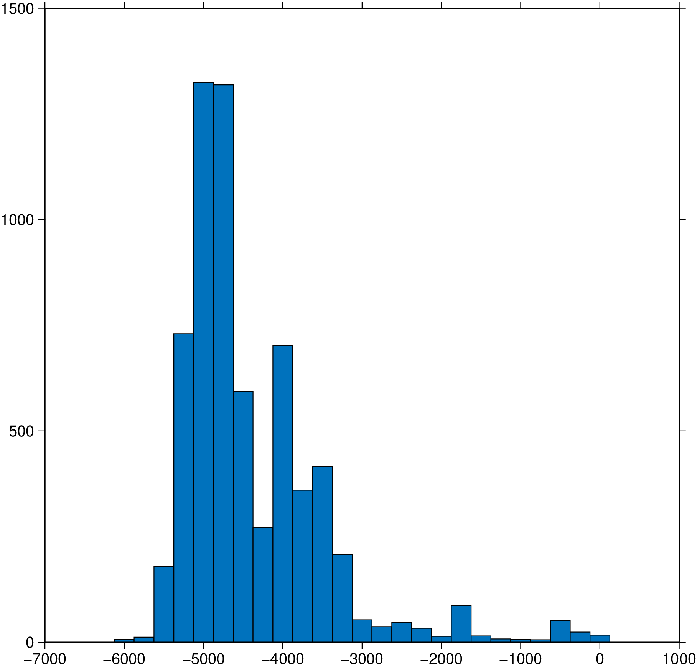

using GMT
histogram("@v3206_06.txt", bin=250, center=true, pen="0.5p", show=true)
Calculate and plot histograms
Reads file, MxN matrix, GMTdataset or GMTimage and examines the first data column (or one set by incol) to calculate histogram parameters based on the bin-width provided. Using these parameters, scaling, and optional range parameters it will plot the histogram. A cumulative histogram may also be specified.
A or horizontal : – horizontal=true
Plot the histogram horizontally from x = 0 [Default is vertically from y = 0]. The plot dimensions remain the same, but the two axes are flipped.
auto : – auto=true
When input is a GMTimage of UInt16 type this option will compute the histogram as well as good bounds to use in contrast enhancement, which will be plotted as two vertical lines.
bg or background : – bg=imagename | bg=funname|img|grd | bg=(…, colormap)
Fills the plotting canvas with a backround image. That image may come from a file (e.g. bg=“cute.png”) or from a predefined function name. Possible names are: akley, eggs, circle, parabola, rosenbrok, sombrero, x, y, xy, x+y. For further details consult the same option in the plot manual.
B or axes or frame
Set map boundary frame and axes attributes. Default is to draw and annotate left, bottom and vertical axes and just draw left and top axes. More at frame
C or color or cmap : – color=cpt
Give a CPT or specify color=“color1,color2 [,color3 ,…]” or color=((r1,g1,b1),(r2,g2,b2),…) to build a linear continuous CPT from those colors automatically. The mid x-value for each bar is used to look-up the bar color. If no argument is given then we select the current CPT.
D or annot or annotate or count : – annot=true | annot=(beneath=|font=|offset=|vertical=,)
Annotate each bar with the count it represents. Add any of the following options: Use annot=(beneath=true,) to place the labels beneath the bars instead of above; use annot=(font=“font”,) to change to another font than the default annotation font; use annot=(offset=val,) to change the offset between bar and label [6p]; use annot=(vertical=true,) to rotate the labels from horizontal to vertical.
E or width : – width=val | width=(width=val, offset=val)
Use an alternative histogram bar width than the default set via bin, and optionally shift all bars by an offset. Here width is either an alternative width in data units, or the user may append a valid plot dimension unit (“c|i|p”) for a fixed dimension instead. Optionally, all bins may be shifted along the axis by offset. As for width, it may be given in data units of plot dimension units by appending the relevant unit.
binmethod or BinMethod : – binmethod=mthod
Use a binning algorithm. For decimal data: “scott”, optimal for data is close to being normally distributed. Also appropriate for most other distributions. Uses a bin width of 3.5*std(X(:))*numel(X)^(-1/3); “fd”, uses a bin width of 2*IQR(X(:))*numel(X)^(-1/3), where IQR is the interquartile range of X; “sturges”, chooses the number of bins to be ceil(1 + log2(numel(X))). “sqrt”, chooses the number of bins to be ceil(sqrt(numel(X))).
For DateTime data: “second”, “minute”, “hour”, “day”, “week”, “month” or “year”
F or center : – center=true
Center bin on each value. [Default is left edge].
full_histo : – full_histo=true
When input is a GMTimage of UInt16 type histograms are often (e.g. Landsat images) characterized by a very high number of countings at x=0 followed by bins with zero countings. By default we check for that case and if found we set the zero bin countings to zero. This is crucial for the auto or thresholds to work. If, however, that is not wished use full_histo=true
G or fill : fill=color
Select filling of bars [Default is a type of blue].
I or inquire or bins : – inquire=:all | inquire=:no_zero | inquire=:bins
Inquire about min/max x and y after binning. The xmin xmax ymin ymax is output; no plotting is done. Use inquire=:no_zero to output a table of the resulting x,y data instead. inquire=:all will output all x,y bin data even when y == 0. inquire=:bins outputs the binned array (the histogram).
J or proj or projection : – proj=
Select map projection. More at [proj](../common_opts/opt_J.html)
L or out_range : – out_range=:first | out_range=:last | out_range=:both
The modifiers specify the handling of extreme values that fall outside the range set by bin. By default these values are ignored. Use out_range=:both to let these values be included in the first or last bins. To only include extreme values below first bin into the first bin, use out_range=:first, and to only include extreme values above the last bin into that last bin, use out_range=:last.
N or distribution : – distribution=mode | distribution=(mode=mode, pen=(pen))
Draw the equivalent normal distribution; append desired pen [0.5p,black]. The mode selects which central location and scale to use:
0 = mean and standard deviation [Default];
1 = median and L1 scale (1.4826 * median absolute deviation; MAD);
2 = LMS (least median of squares) mode and scale.This option may be repeated to draw several of these curves. To do that use a tuple of tuples. Example: N=((mode=1,pen=(1,:red)), (mode=0,pen=(1,:blue)))
Q or cumulative : – cumulative=true | cumulative=“r”
Draw a cumulative histogram. Append r to instead compute the reverse cumulative histogram.
S or stairs : – stairs=true
Draws a stairs-step diagram which does not include the internal bars of the default histogram. Uses pen.
T or range or bin : – range=(min,max,inc[,:number,:log2,:log10]) | range=[list] | range=file
Defines the range of the new CPT by giving the lowest and highest z-value (and optionally an interval). If range is not given, the existing range in the master CPT will be used intact. The values produces defines the color slice boundaries. If :number is added as a fourth element then inc is meant to indicate the number of equidistant coordinates instead. Use :log2 if we should take log2 of min and max, get their nearest integers, build an equidistant log2-array using inc integer increments in log2, then undo the log2 conversion. Same for :log10. For details on array creation, see Generate 1D Array.
thresholds : – thresholds=(low,high)
When input is a GMTimage of UInt16 type this option will compute the histogram as well as good bounds to use in contrast enhancement. The alghoritm used checks from right and left when the countings are >= low && <= high percentage of the maximum histogram countings. The defaul values (which are used by auto and zoom) are thresholds=(0.1,0.4)
getauto or getthresholds : – getthresholds=true
Get the automatically determined thresholds to use in contrast enhancement. No plotting is done.
Z or kind : – kind=type | kind=(counts=, | freq=, | frequency=, | log_count=, | log_freq=, | log10_count=, | log10_freq=, weights=)
Choose between 6 types of histograms:
0 = counts [Default]
1 = frequency_percent
2 = log (1.0 + count)
3 = log (1.0 + frequency_percent)
4 = log10 (1.0 + count)
5 = log10 (1.0 + frequency_percent).To use weights provided as a second data column instead of pure counts, use a tuple. e.g. kind=(counts=true, weights=true). If no weights are used then we may use the simpler form kind=?? where ?? is the name of any of the 6 types. e.g. kind=frequency
zoom : – zoom=true
When input is a GMTimage of UInt16 type this option will set auto=true and show histogram only on the region of interest.
To draw a histogram of the data v3206_06.txt containing seafloor depths, using a 250 meter bin width, center bars, and draw bar outline, use:
If you know the distribution of your data, you may explicitly specify range and scales. E.g., to plot a histogram of the y-values (2nd column) in the file errors.xy using a 1 meter bin width, plot from -10 to +10 meters @ 0.75 cm/m, annotate every 2 m and 100 counts, and use black bars, run:
Since no y-range was specified, histogram will calculate ymax in even increments of 100.
To plot the histogram of a Landsat image, pick good bounds for contrast enhancement and show them
The GMT man page